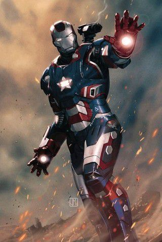

|  | 상품가격 | 38,600,000,000원 |
|---|---|---|
| 원산지 | 국내 | |
| 워머신 Mk.2 (아이언 패트리어트) | 배송 | 무료 평균배송일 5.0일 |
| 후기 |   | |
아이언맨2에서 나왔던 해머사 무기 장착형 아머가 아니라 토니가 새로 만들어 준 모델이다.
워 머신을 회수한 토니는 해머 테크 장비들을 뜯으면서 다시는 이 슈트를 입지 못 하게 하겠다며 짜증을 낸다.
이때 잠시 내 수트에 해머 무기를 다는것은 모나리자에 4살 짜리가 낙서한거랑 비슷하다고 말했다.
그리고 기본이 된 아이언맨 Mk.2 아머는 회수해서 토니 집에 전시 중.